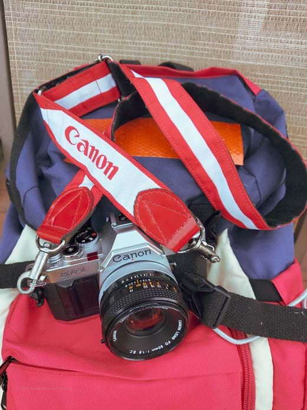
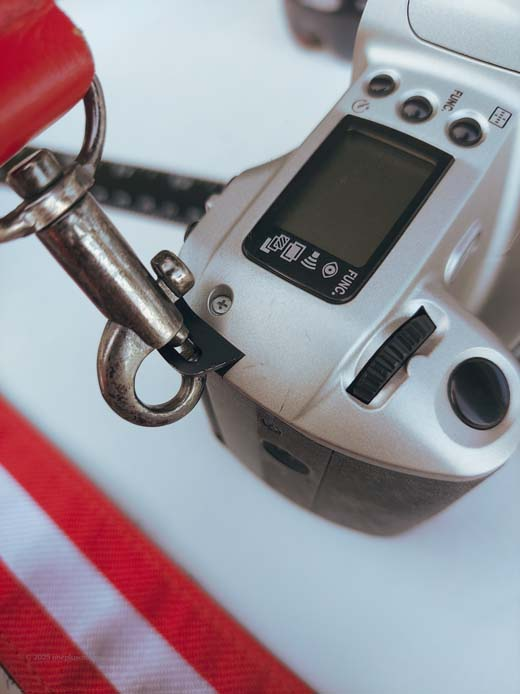
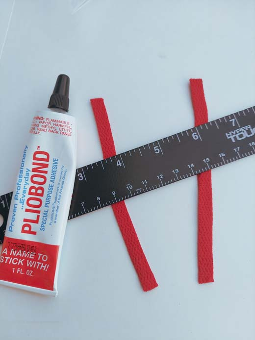
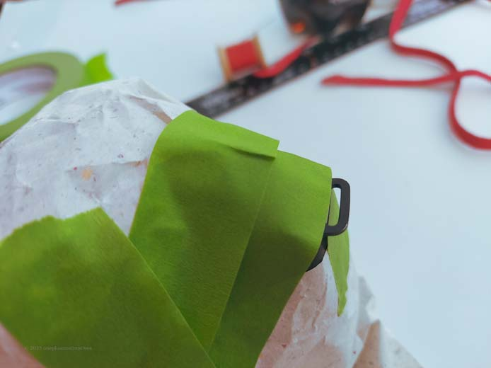
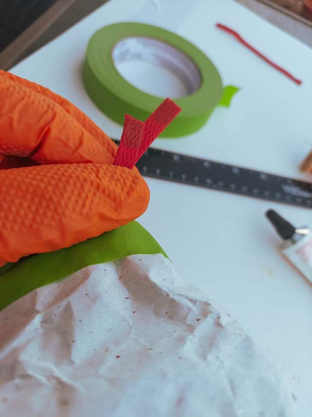
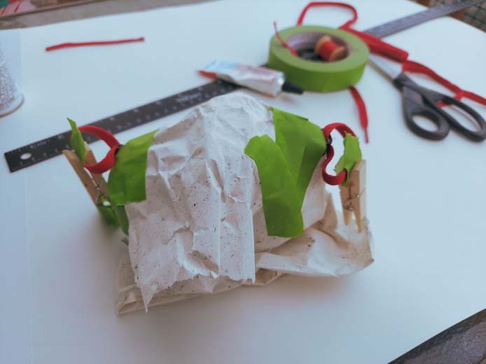
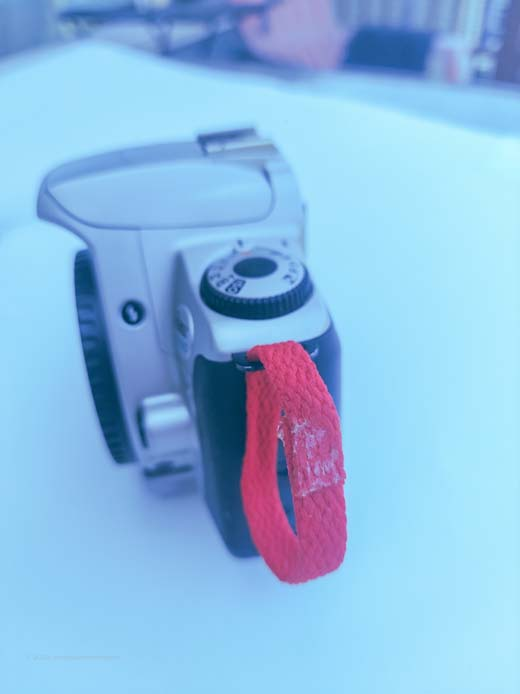
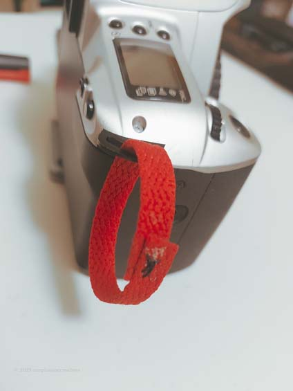
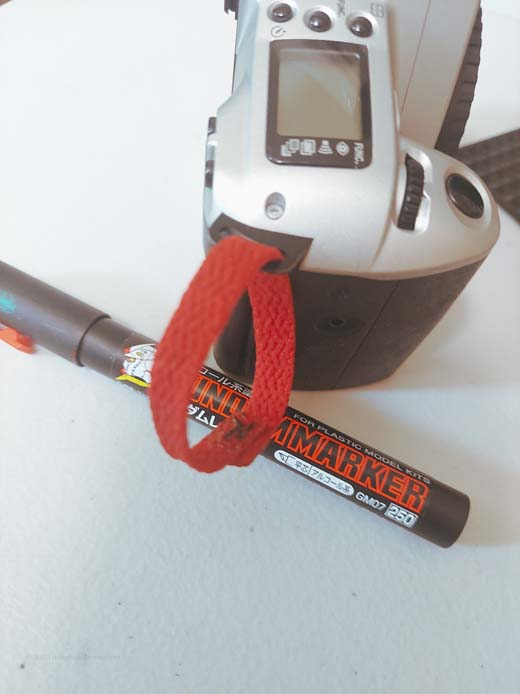
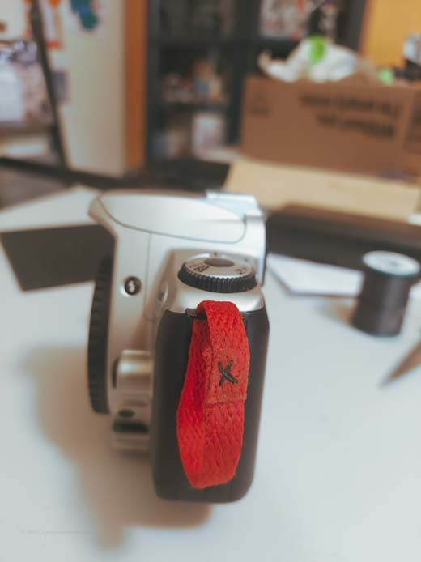

One Plus One Creatives
Creating Space Between Choice and Consequence
← Back to Tinkering/Restorations

Shoulder Strap Sew Time
Scored this great vintage Canon strap from Japan Meister, a store on ebay (dudes super chill BTW) it wouldnt fit my Rebel 2000 so I used this as an opportunity to make some customizations to it!
Materials & Tools
EDIT THE MATERIALS AND TOOLS IN THE JAVASCRIPT SECTION BELOW
Process Photos

Its the same era as my AV-1, as you can see here.

The Strap for the Rebel is more functional and lighter, but I dont like it.. too bad this doesnt fit! But I had an idea 8)

I got some Pilobond for another project I did, I\'m glad I had it, as its just what I needed. Flexible yet strong.

I Channeled Adam Savage here and masked masked MASKED

I didnt think this part through.. but it was fine 8) Just sat for a bit and thought about my next steps.

I didnt think well enough though, as this was my second attempt. The first time I just glued loops, before trying to lace them in the eyeholes!

The next day I peeled off the tape and was not surprised at the result. But the visible glue isnt going to be a problem

I wanted to be sure the added straps would hold fast. so I spent some time sewing them to the best of my ability. This was fun, I didn't know what I was doing.. but that's okay. I realized that the end of the string needed both stop and stay somewhere, so grabbed some superglue!

I looked my paints and pens, and scored with this Gunpla marker, this was PERFECT, check that out! Inside that pen, is a thin, semitranslucent paint, so it soaked into the shoelace instead of laying on top of the fabric, and intereacted with the microscopic (I think thats what happening anyway) airbubles in the dried glue in a very satisfyingly-invisible way.

Not too Shabby
Yeah this was great! I\'m glad I got to do some new things with this little project. It took about 4 hours all told.
EDIT THE CONTENT IN THE JAVASCRIPT SECTION BELOW